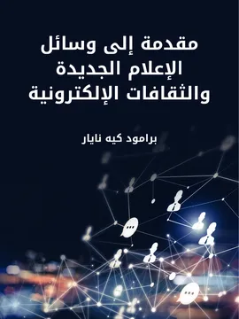

مقدمة إلى وسائل الإعلام الجديدة والثقافات الإلكترونية

قراءة عربية أصلية محددة النطاق في الصفحات 9 إلى 14 من ملف PDF المرتبط، وليست تلخيصا كاملا للكتاب. نناقش ما تدعمه هذه المقاطع فقط.
الثقافات الإلكترونية: افتراضية أم مادية؟
يفتتح نايار الفصل الأول بحادثتين: في يناير ٢٠٠٨ قطعت مرساة سفينة كابلات تحت البحر المتوسط فتضررت خدمات الإنترنت عبر العالم وعانت الهند اضطرابًا في التعهيد؛ وفي نوفمبر ٢٠٠٨ حكى تقرير قصة زوجين بصدد الطلاق بسبب علاقة خوضها الزوج في العالم الافتراضي، فرفضت الزوجة عذره بأنه «غرام في عالم وهمي». وتصور الحادثتان فرضية الكتاب: أن الفضاء الإلكتروني متمرسخ في ظروف مادية؛ فبنى «العتاد الصلب» من الأجساد والمدن والكابلات وأماكن العمل خاضعة لآليات العرق والطبقة والتفاوتات والظلم. ومن مصطلحات الحقل «الثقافات الإلكترونية» ودراسات الإنترنت والإعلام الجديد ومجتمع المعلومات، وتدل كثرتها على طبيعته العابرة للتخصصات. ويصف الفضاء الإلكتروني العوالم الناشئة عن تكنولوجيات المعلومات الرقمية، ويُنظر إليه بوصفه منظومة علاقات وأفعال داخل فضاء الأجهزة، يُنتج أيضًا عبر تطبيقات كالهاتف المحمول والمراقبة. ويشير إلى ما أوضحته ناكامورا من أن بيئات الواقع الافتراضي لا تشكل معظم خبرة المستخدمين؛ فالمدونات والألعاب والتسوق أهم يوميًّا، وليس هناك ثقافة إلكترونية واحدة.
زاوية وحدود القراءة
قراءة موجزة من ص ٩ إلى ص ١٤ من أصل ٣٣٨ صفحة، تعرض مطلع الفصل الأول، لا الكتاب كاملًا.
الطبعة والقراءة
هذه الترجمة العربية صادرة ومتاحة مجانًا بموجب اتفاق قانوني بين مؤسسة هنداوي وجون وايلي أند صنز، إنك. حقوق الترجمة محفوظة لمؤسسة هنداوي.
تنزيل PDF المجاني ↓ القراءة والمصدر الرسمي ↗